Overview
In Part A, I worked with a pre-trained diffusion model (DeepFloyd IF) and implemented sampling loops plus a few classic diffusion "applications" like inpainting and optical illusions. In Part B, I trained a UNet-based model on MNIST from scratch and used flow matching to iteratively generate digits.
Part A: The Power of Diffusion Models!
Part 0: Setup
DeepFloyd IF uses prompt embeddings (rather than raw text) as conditioning. I generated a prompt embedding dictionary and used a fixed random seed of 100 for reproducibility. I tried num_inference_steps values of 20 and 60, and noticed that the the ones with 20 were generated faster, but the ones with 60 were more "accurate" to the prompt and better quality in that sense.
|
|
|
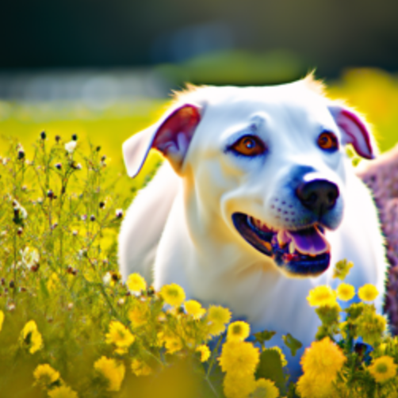 |
|
|
|
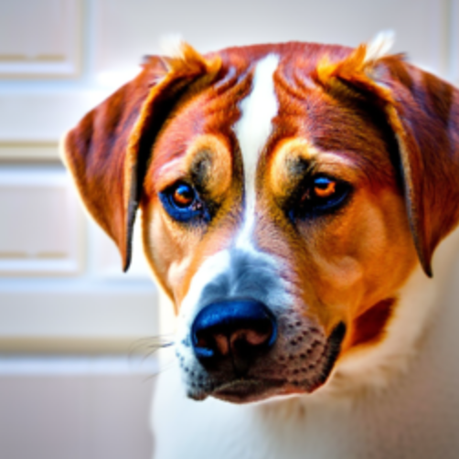 |
Part 1: Sampling Loops
1.1 Implementing the Forward Process
The forward process adds noise to a clean image \(x_0\) to produce a noisy image \(x_t\): \[ x_t = \sqrt{\bar\alpha_t}x_0 + \sqrt{1-\bar\alpha_t}\,\epsilon,\quad \epsilon\sim\mathcal N(0,I). \] Below are examples of the Campanile after adding noise at different timesteps.

|

|

|
1.2 Classical Denoising
As a baseline, I applied a simple classical denoising method (using Gaussian blur filtering) to the noisy images. This is not diffusion-based, but it gives a quick point of comparison for what "generic" denoising does at different noise levels.

|

|

|

|

|

|
1.3 One-step Denoising
One-step denoising predicts a single-step estimate of the clean image from a noisy input. Below are the original, noisy, and one-step denoised results at a few timesteps.

|

|

|

|

|

|

|

|

|
1.4 Iterative Denoising Loop
Iterative denoising repeatedly predicts and removes noise across a schedule of timesteps to transform pure noise into a clean image.
|
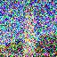 |
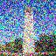 |
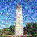 |
|
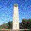 |
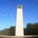 |
|
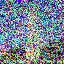
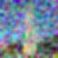
1.5 Diffusion Model Sampling
Starting from random Gaussian noise, I ran the iterative denoising procedure to sample images using the prompt "a high quality photo".

|

|

|

|

|
1.6 Classifier-Free Guidance (CFG)
Classifier-free guidance combines a conditional and unconditional noise estimate to match to a prompt: \[ \epsilon = \epsilon_u + s(\epsilon_c - \epsilon_u). \] Below are five samples generated with CFG (scale \(s=7\)).


1.7 Image-to-Image Translation and Editing
For this section, I'm using the same idea as in Part 1.4: take a real image, add diffusion noise to it, and then run the denoising process to "revert" the image. The denoising is undoing noise and fills in what is messed up by the noise. This additional variance causes the images to deviate from the original
I followed the following steps to do this:
- I chose the starting index (i_start \in {1, 3, 5, 7, 10, 20}).
- I used the forward process at timestep t = strided_timesteps[i_start] to create a noisy image.
- Then I denoised using classifier-free guidance (CFG) with the conditional prompt "a high quality photo" and an unconditional empty prompt, using a guidance scale of 7.

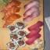
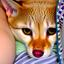
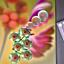
1.7.1 Editing Hand-Drawn and Web Images
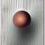
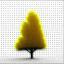
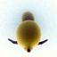
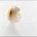
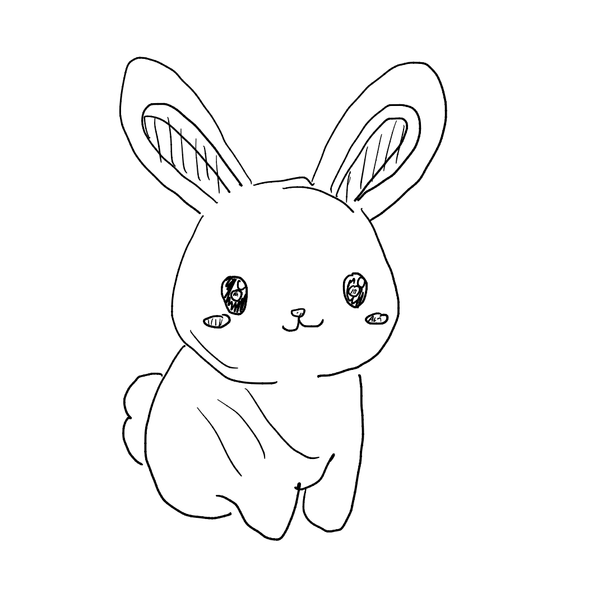
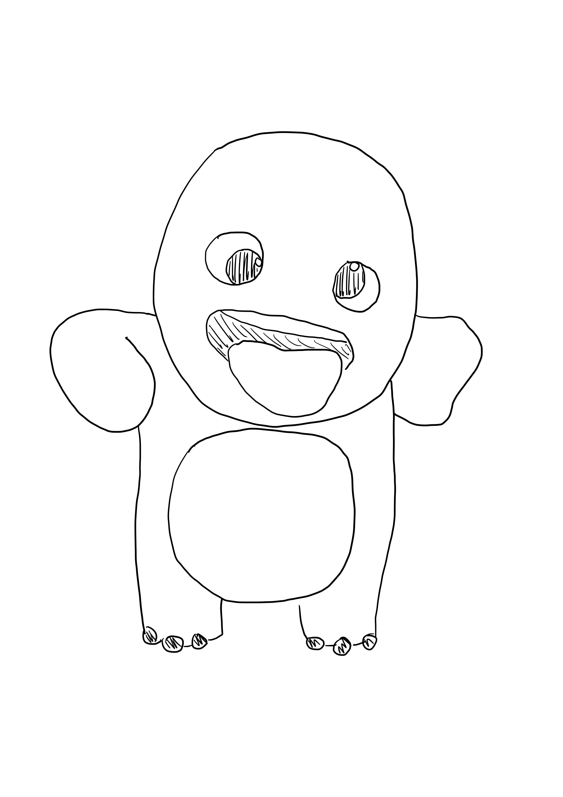
1.7.2 Inpainting
For inpainting, the goal is to only edit a chosen region of the image while keeping everything else fixed. I do this with a binary mask m, where m = 1 marks pixels I'm allowed to change (the hole), and m = 0 marks pixels I want to preserve.
The key idea is to run the normal diffusion denoising loop (with classifier-free guidance, using the prompt "a high quality photo" and an empty unconditional prompt), but after each step I force the unmasked region to match the original image at the correct noise level for that timestep: \[ x_t \leftarrow m \odot x_t + (1-m)\odot \text{forward}(x_{\text{orig}}, t) \] In my implementation, I start from pure noise, predict the previous timestep image using the same update rule as iterative_denoise_cfg, then compute orig_noisy = forward(original_image, prev_t) and overwrite everything outside the mask using: image = mask * pred_prev_image + (1 - mask) * orig_noisy. This constraint makes the model invent new content only inside the mask, while the rest of the image stays locked to the original (with consistent diffusion noise). I used this to inpaint the top of the Campanile, and then repeated the same procedure on two of my own images with custom masks, saving and visualizing the final inpainted results.


1.7.3 Text-Conditional Image-to-Image Translation
This section is the same SDEdit-style image-to-image setup as 1.7, except instead of projecting back with a generic photo prior, I steer the denoising with an explicit text prompt. Practically, the only change is swapping the conditional prompt embedding from "a high quality photo" to whatever prompt I want (which was "a lithograph of waterfalls"), while still using CFG with an empty unconditional prompt and guidance scale 7. For each noise level among {1, 3, 5, 7, 10, 20}, I first ran the forward process to make a noisy version of the Campanile, then denoised Lower i_start means more noise, which gives larger, more varying results that follow the prompt not as strongly, while higher i_start preserves the original structure more closely and mostly switches up small details.


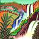
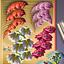
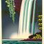
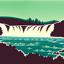
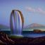
1.8 Visual Anagrams
Visual anagrams are two-in-one diffusion samples: the image should satisfy one prompt when viewed normally, but a different prompt when flipped upside down. I needed to make the denoising step match both prompts at the same time, just in different directions.
At each t, I calculated two noise estimates: (\epsilon_1) to denoise the current image (x_t) with prompt 1 and (\epsilon_2): to flip (x_t) vertically, denoise with prompt 2, then flipped the predicted noise back Then I averaged them to get the final noise prediction: \[ \epsilon = \frac{\epsilon_1 + \epsilon_2}{2} \] and use (\epsilon) in the standard reverse diffusion update to get (x_{t-1}). Because the same latent is being pushed to match two different text conditions (depending on orientation), the final sample ends up encoding both prompts: one interpretation upright and a different one when flipped. In code, this is implemented by running the UNet twice per step (once on img, once on flip(img)), applying CFG to each, flipping the second noise estimate back, and averaging before the usual x0_est → pred_prev_image update. I generated two different prompt pairs, and for each result I saved both the normal image and the flipped version to show the illusion clearly.
Visual anagram with "a photo of a dog" and "a photo of the amalfi coast"
Visual anagram with "a lithograph of waterfalls" and "an oil painting of people around a campfire"
1.9 Hybrid Images
For hybrid images, the goal is to make a single diffusion sample that contains two prompts at different spatial frequency bands, so the image reads like one thing from far away (low frequencies) and another thing up close (high frequencies), similar to the classic hybrid images idea from Project 2. At each denoising step (t), I compute two CFG noise estimates from the same latent (x_t), one for prompt (p_1) and one for prompt (p_2): \[ \epsilon_1 = \text{CFG}(\text{UNet}(x_t,t,p_1)), \quad \epsilon_2 = \text{CFG}(\text{UNet}(x_t,t,p_2)) \] Then I factorize the guidance by mixing frequency content: \[ \epsilon = \text{lowpass}(\epsilon_1) + \text{highpass}(\epsilon_2) \] I implemented the low/high split using a Gaussian blur (kernel size 33, (\sigma=2)): low = gaussian_blur(\epsilon), high = \epsilon - low. Finally, I plugged this composite (\epsilon) into the standard reverse diffusion update to get (x_{t-1}). In practice, this makes the denoising process match both prompts simultaneously but at different scales: the smooth structure is driven by (p_1), while the sharp details are driven by (p_2).
prompts:
"a pencil" and "a man wearing a hat" AND
"a rocket ship" and "a lithograph of waterfalls"
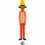
Part B: Flow Matching from Scratch
In Part B, I trained UNet-based models on MNIST. I started with a single-step denoiser trained with an MSE objective, then moved to flow matching (time conditioning), and finally added class conditioning with classifier-free guidance.
Part 1: Training a Single-Step Denoising UNet
1.2 Using the UNet to Train a Denoiser
Training pairs are generated by sampling noise and forming \(z = x + \sigma\epsilon\) for MNIST images \(x\).


1.2.2 Out-of-Distribution Testing
After training at \(\sigma=0.5\), I evaluated the denoiser on different noise levels to see how well it generalizes.

1.2.3 Denoising Pure Noise
I also trained a model where the input is pure noise (instead of a noised MNIST digit). With an MSE objective, the model tends to predict something like an "average" over the training distribution, which can lead to blurry, superimposed digit-like patterns.
Part 2: Training a Flow Matching Model
2.2 Training the Time-Conditioned UNet
Flow matching results in a vector field \(u(x_t,t)=x_1-x_0\) where \(x_t=(1-t)x_0+tx_1\), with \(x_0\sim\mathcal N(0,I)\) and \(x_1\) from MNIST.

2.3 Sampling from the Time-Conditioned UNet


Class-Conditioning + Classifier-Free Guidance
2.5 Training the Class-Conditioned UNet

2.6 Sampling from the Class-Conditioned UNet